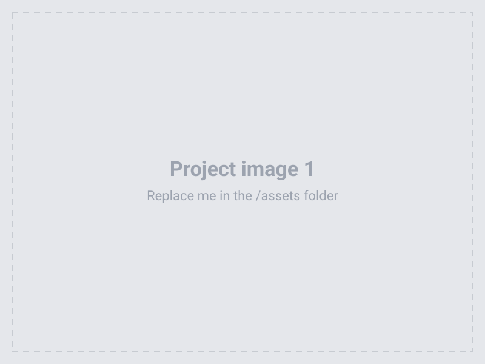
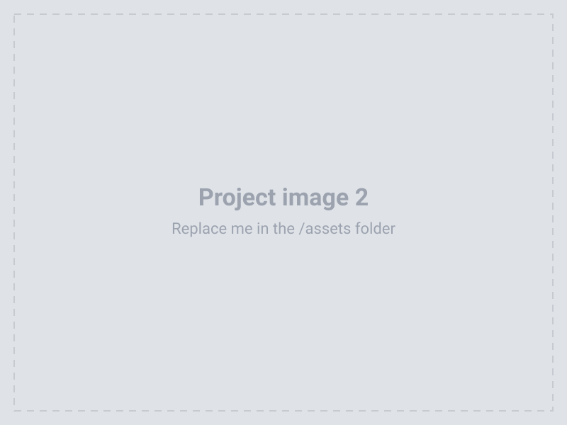
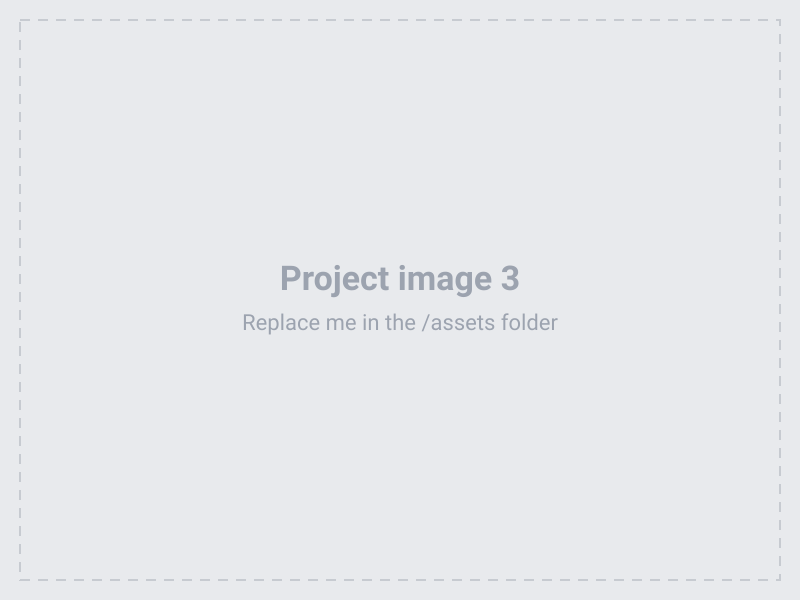

REPLACE: Project Title
REPLACE THIS. Describe your project here. Tell the story of what you made and how you made it. A few short paragraphs works well.
You can write as much or as little as you like. Delete this paragraph if you don't need it.


